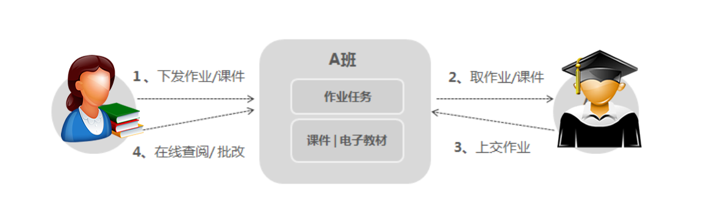

e-Archives数据管理应用云系统是上海鸿祚信息技术有限公司旗下的第一个具有自主知识产权的的云应用系统。系统为企业搭建一个海量文档和多媒体流文件集中存储、管理和分享协作等应用的基于云存储技术的应用系统；系统涵盖了当今流行的企业网盘、FTP服务器、文件服务器、SaaS（Software as a Service 软件即服务）功能应用模式；能对各种企业管理应用软件（如ERP、PDM、OA等）进行无缝整合。
系统广泛适用于科研院校及培训机构的辅助教学。借助e-Archive云系统，可轻松实现：课件共享、小组协作、问卷调查、作业收发和在线考试等功能。学生们可利用e-Archives系统配合课程分享视音频资料、电子教材、读书笔记，除此之外，还可以利用e-Archives云系统组织活动、共享照片、资料等。
课件是重要的教学工具，散落在个人电脑中，科室成员无法共享，一旦电脑损坏，课件的安全也没有保障。e-Archives企业云提供海量数据弹性存储，具备多重加密及备份机制，确保课件及教学文档安全不丢失。无论在学校、在家中、在旅途，老师都可以随时随地访问，备课更轻松。学校统一建设课件库，同一学科的教师可以共享同类课件，共同贡献智慧，共同维护课件资源，实现资源的逐步积累。
区别于个人网盘或当今主流的企业网盘，e-Archives系统在协同共享方面的功能更加强大。管理者可按学科类别、课题组、科室、班级等建立不同的组。教师在作业下发时，只需将作业内容上传至e-Archives云系统，选择指定的“班级组”进行分享，一键分发，即可轻松将作业分发给班级内的所有学生。也可以将作业的链接，通过 QQ、微信等方式分享给学生。学生完成作业后，上传至指定目录，老师无需二次整理，直接将作业分类存储在e-Archives云中。

课当作业越来越多时，想找到某一份作业，除了按目录进行查找外，还可以借助e-Archives企业云的全文检索功能，进行多维度查找，比如按上交时间、上交人、作业名、甚至作业中的某一句话等等进行查找。老师可以根据需要直接在线查阅，对作业进行批注 ，也可以批量下载后在本地修改。
学生或老师都可发起作业的协同邀请，选择协同目录或文件后，邀请其他同学进行作业协同。被邀请的协作者可以对一个文档进行评论，也可以将改过的新版本上传替换原有版本，系统支持多版本功能，将保存协作过程中的任一历史版本，方便协作组根据需要恢复至某一历史版本。协作发起者还可根据需要 ，对协作组中成员赋予不同级别的操作权限，如：一部分人只有浏览文件的权利、而另一部分人可以对文档进行编辑，甚至上传文档新版本。
e-Archives企业云集成了云表单功能，可以在线制作表格，例活动问卷、调查问卷、请假单、学生基本信息表等，可将链接发布到网站 ，或通过邮件、QQ、微信等渠道分发给指定的填写者，填写者可通过电脑、手机、PAD 等实时填表 。
作为国内商学院排名居前的某著名大学经济管理学院 ，已经开始将e-Archives系统用于MBA 的辅助教学，产生了很好的效果。虽然该高校的计算机专业在国内处于领先地位，但过去经管学院 MBA 教育中很少采用信息化手段，只有部分学生通过个人网盘做些文档分享，协同合作只停留在组织行为的教科书中。
e-Archives数据管理应用云系统在原型阶段，该学院就引入了服务，正式上线后，率先将e-Archives企业云应用于网课系统，解决暑假期间 MBA 学生课件共享、小组协作、问卷调查、作业收发和在线考试等问题。
暑假期间，学生很少到学校，网课课件共享难度增加，过去是老师或学生代表利用个人网盘或 U 盘分发课件，由于个人网盘外链共享的限制，大家只能共用一个账号去下载，这不仅效率低，而且存在其它文件外泄的可能；而 U 盘复制课件不易分享，而且可能会传染计算机病毒。如今，引入了e-Archives企业云服务，每个学生都有账号，老师可以将需要分享的课件统一分发给每个学生，并可以设定课件是否允许下载，还是只能在线阅读。
MBA 教育中，小组作业是教学中的一大特点，不过因为学生很多都是在职学习，而该校 MBA 学生又多是企业高管，工作比较繁忙，在一起讨论的机会较少。 e-Archives企业云行业应用——教育行业
各种调查研究是 MBA 和各类研究生教学中经常涉及的项目，利用e-Archives企业云的智能表单，学生可以轻松的设计问卷，定向分发或利用外链在社交媒体上分发，用以收集数据。e-Archives企业云可以自动汇总、统计，并提供了精美的分析图表，如果需要特别的统计分析，又可将数据导出为 Excel 格式，方便专业软件分析。
利用e-Archives企业云，老师发布作业时，只需建立一个作业的协作目录，再将作业要求分享给每个学生，学生的作业上传至作业协作目录，即可提交作业，而且在最后时限前还可以进行修改，同时老师的批改也可在同一文件中显示，并保留各次修改的过程，避免了用邮件附件提交作业，反复修改造成版本混乱的窘态。
除了这些教学应用，学生们还利用e-Archives云系统，配合课程分享视音频资料、电子教材、读书笔记，平时则利用e-Archives企业云更新通讯录、组织活动、共享照片、管理班费等。还有学生利用e-Archives系统的在线编辑功能为无法到校的同学实时分享课堂笔记。不仅提高了大家的学习效率，还拉近了同学们的校园感情。